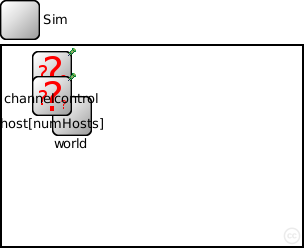

This documentation is released under the Creative Commons license
This documentation is released under the Creative Commons license(no description)
The following diagram shows usage relationships between types. Unresolved types are missing from the diagram. Click here to see the full picture.

The following diagram shows inheritance relationships for this type. Unresolved types are missing from the diagram. Click here to see the full picture.

| sim (network) | (no description) |
| Name | Type | Default value | Description |
|---|---|---|---|
| playgroundSizeX | double |
parametes for the framework |
|
| playgroundSizeY | double | ||
| numHosts | double |
| Name | Value | Description |
|---|---|---|
| display | bgb=$playgroundSizeX,$playgroundSizeY,white,,;bgp=0,0 |
| Name | Type | Default value | Description |
|---|---|---|---|
| world.coreDebug | bool |
debug switch for the base framework |
|
| world.playgroundSizeZ | double |
z size of the area the nodes are in (in meters) |
|
| world.useTorus | bool |
use the playground as torus? |
|
| world.use2D | bool |
use a 2-dimensional world? |
|
| channelcontrol.coreDebug | bool |
debug switch for core framework |
|
| channelcontrol.sendDirect | bool |
send directly to the node or create separate gates for every connection |
|
| channelcontrol.pMax | double |
maximum sending power used for this network [mW] |
|
| channelcontrol.sat | double |
minimum signal attenuation threshold [dBm] |
|
| channelcontrol.alpha | double |
minimum path loss coefficient |
|
| channelcontrol.carrierFrequency | double |
minimum carrier frequency of the channel [Hz] |
|
| host.blackboard.coreDebug | bool |
debug switch for the base framework |
|
| host.mobility.coreDebug | bool |
debug switch for the core framework |
|
| host.mobility.x | double |
x coordinate of the nodes' position (-1 = random) |
|
| host.mobility.y | double |
y coordinate of the nodes' position (-1 = random) |
|
| host.mobility.z | double |
z coordinate of the nodes' position (-1 = random) |
|
| host.mobility.debug | bool |
debug switch |
|
| host.mobility.speed | double |
speed of the host (in m/s) |
|
| host.mobility.updateInterval | double |
time interval to update the hosts position (seconds) |
|
| host.battery.debug | bool | ||
| host.battery.nominal | double | ||
| host.battery.capacity | double | ||
| host.battery.voltage | double | ||
| host.battery.resolution | double | ||
| host.battery.publishDelta | double | ||
| host.battery.publishTime | double | ||
| host.batteryStats.debug | bool | ||
| host.batteryStats.detail | bool | ||
| host.batteryStats.timeSeries | bool | ||
| host.appl.debug | bool |
debug switch |
|
| host.appl.headerLength | int |
length of the application message header (in bits) |
|
| host.appl.burstSize | int |
size of the burst |
|
| host.arp.coreDebug | bool |
debug switch for the core framework |
|
| host.net.notAffectedByHostState | bool | false | |
| host.net.debug | bool |
debug switch |
|
| host.net.stats | bool |
stats switch |
|
| host.net.headerLength | double |
length of the network packet header (in bits) |
|
| host.nic.mac.notAffectedByHostState | bool | false | |
| host.nic.mac.coreDebug | bool |
debug switch |
|
| host.nic.mac.headerLength | double |
length of the MAC packet header (in bits) |
|
| host.nic.mac.queueLength | int | ||
| host.nic.mac.rtsCtsThreshold | int | ||
| host.nic.mac.bitrate | double | ||
| host.nic.mac.defaultChannel | int |
minimum channel support auto bit rate selection support: specify borders at which to change modulation. |
|
| host.nic.mac.autoBitrate | bool |
use auto bit rate adaptation |
|
| host.nic.mac.snr2Mbit | double |
threshold to use 2Mbit (in dB) |
|
| host.nic.mac.snr5Mbit | double |
threshold to use 5.5Mbit (in dB) |
|
| host.nic.mac.snr11Mbit | double |
threshold to use 11Mbit (in dB) |
|
| host.nic.mac.neighborhoodCacheSize | int |
keep information on neighborhood |
|
| host.nic.mac.neighborhoodCacheMaxAge | double |
consider information in cache outdate if older than (in seconds) |
|
| host.nic.mac.txPower | double |
the power to transmit packets with [mW] |
|
| host.nic.mac.centerFrequency | double |
the center frequency the Mac uses [Hz] |
|
| host.nic.phy.coreDebug | bool | ||
| host.nic.phy.headerLength | int | 0 |
defines the length of the phy header (/preamble) |
| host.nic.phy.usePropagationDelay | bool |
Should transmission delay be simulated? |
|
| host.nic.phy.thermalNoise | double |
the strength of the thermal noise [dBm] |
|
| host.nic.phy.useThermalNoise | bool |
should thermal noise be considered? |
|
| host.nic.phy.analogueModels | xml |
Specification of the analogue models to use and their parameters |
|
| host.nic.phy.decider | xml |
Specification of the decider to use and its parameters |
|
| host.nic.phy.sensitivity | double |
The sensitivity of the physical layer [dBm] |
|
| host.nic.phy.maxTXPower | double |
The maximum transimission power of the physical layer [mW] |
|
| host.nic.phy.timeRXToTX | double |
switchTimes [s]: |
|
| host.nic.phy.timeRXToSleep | double | ||
| host.nic.phy.timeTXToRX | double | ||
| host.nic.phy.timeTXToSleep | double | ||
| host.nic.phy.timeSleepToRX | double | ||
| host.nic.phy.timeSleepToTX | double | ||
| host.nic.phy.initialRadioState | int |
module Sim { parameters: // parametes for the framework double playgroundSizeX @unit(m); double playgroundSizeY @unit(m); double numHosts; @display("bgb=$playgroundSizeX,$playgroundSizeY,white,,;bgp=0,0"); submodules: world: BaseWorldUtility { parameters: playgroundSizeX = playgroundSizeX; playgroundSizeY = playgroundSizeY; } channelcontrol: ConnectionManager { parameters: @display("p=50,25;i=eye14"); } host[numHosts]: Host { parameters: @display("p=50,50;i=node"); } connections allowunconnected: // all connections and gates are to be generated dynamically }
This documentation is released under the Creative Commons license